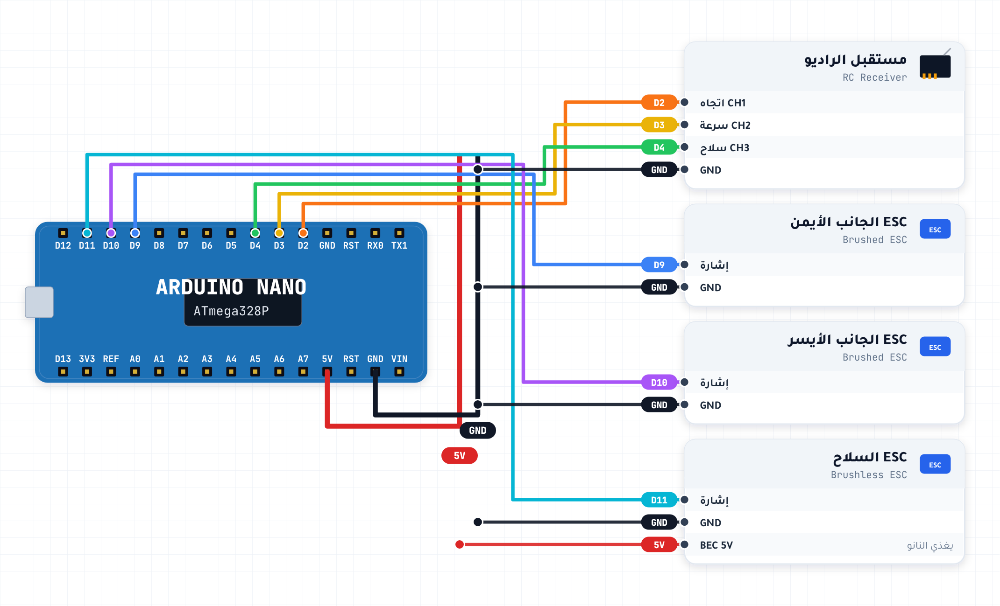

▶فيديو الشرح
Arduino Nano يقرأ قنوات جهاز التحكم ويخلطها لقيادة الروبوت ويشغّل السلاح الدوار بأمان.
1المكونات
ARDUINO NANOboardمستقبل الراديوRC ReceiverESC الجانب الأيمنBrushed ESCESC الجانب الأيسرBrushed ESCESC السلاحBrushless ESCأسلاك توصيلJumper Wiresلوحة تجاربBreadboard
2مخطط التوصيل

اضغط على المخطط لتكبيره · نسخة SVG عالية الدقة
| القطعة | الطرف | يوصل إلى |
|---|---|---|
| مستقبل الراديو | CH1 اتجاه | D2 |
| مستقبل الراديو | CH2 سرعة | D3 |
| مستقبل الراديو | CH3 سلاح | D4 |
| مستقبل الراديو | GND | GND |
| ESC الجانب الأيمن | إشارة | D9 |
| ESC الجانب الأيمن | GND | GND |
| ESC الجانب الأيسر | إشارة | D10 |
| ESC الجانب الأيسر | GND | GND |
| ESC السلاح | إشارة | D11 |
| ESC السلاح | GND | GND |
| ESC السلاح | BEC 5V | 5V يغذي النانو |
3الكود
المكتبات المطلوبة (من Arduino IDE ← Sketch ← Include Library ← Manage Libraries):
- Servo (مدمجة مع Arduino IDE)
/* المستوى المتطور — المشروع 5: روبوت القتال بالتحكم اللاسلكي (RC Combat Robot) كتاب: 38 مشروع في شهر — لؤي النصري (@robotlouay) الفكرة: الأردوينو نانو يقرأ قنوات المستقبل (RC Receiver) ويخلط إشارتي الاتجاه والسرعة (Mixing) لقيادة جانبي الروبوت، ويتحكم في سلاح البروشليس عبر ESC. التوصيل: المستقبل: CH1 (يمين/يسار) → D2 CH2 (أمام/خلف) → D3 CH3/CH5 (السلاح) → D4 تغذية المستقبل من 5V الخاص بالـ ESC (BEC) + GND مشترك ESC الجانب الأيمن (ثنائي الاتجاه) → D9 ESC الجانب الأيسر → D10 ESC السلاح (Brushless) → D11 ⚠ السلامة: جرّب دائماً والسلاح مفكوك، واعمل داخل صندوق حماية، وتأكد من عمل الإيقاف الآلي (Failsafe) قبل أي اختبار. */ #include <Servo.h> const int CH_STEER = 2, CH_THROTTLE = 3, CH_WEAPON = 4; Servo escRight, escLeft, escWeapon; int readChannel(int pin) { unsigned long w = pulseIn(pin, HIGH, 25000); // 1000..2000 µs if (w < 900 || w > 2100) return 0; // لا إشارة return w; } void failsafe() { escRight.writeMicroseconds(1500); // توقف (ESC ثنائي الاتجاه) escLeft.writeMicroseconds(1500); escWeapon.writeMicroseconds(1000); // السلاح متوقف } void setup() { pinMode(CH_STEER, INPUT); pinMode(CH_THROTTLE, INPUT); pinMode(CH_WEAPON, INPUT); escRight.attach(9); escLeft.attach(10); escWeapon.attach(11); failsafe(); delay(3000); // وقت تهيئة (Arming) الـ ESC } void loop() { int steer = readChannel(CH_STEER); int thr = readChannel(CH_THROTTLE); int weap = readChannel(CH_WEAPON); if (steer == 0 || thr == 0) { failsafe(); return; } // فُقدت الإشارة → توقف فوري // تحويل إلى -500..+500 مع منطقة ميتة صغيرة حول المنتصف int s = steer - 1500; if (abs(s) < 30) s = 0; int t = thr - 1500; if (abs(t) < 30) t = 0; // الخلط (Arcade Mixing): يمين = سرعة − اتجاه ، يسار = سرعة + اتجاه int right = constrain(t - s, -500, 500); int left = constrain(t + s, -500, 500); escRight.writeMicroseconds(1500 + right); escLeft.writeMicroseconds(1500 + left); // السلاح: يعمل فقط إذا كانت الإشارة صالحة escWeapon.writeMicroseconds(weap == 0 ? 1000 : constrain(weap, 1000, 2000)); }
4كيف يعمل؟
- قراءة 3 قنوات من المستقبل (1000–2000µs)
- الخلط: يمين = سرعة − اتجاه ، يسار = سرعة + اتجاه
- ESC السلاح يتحكم في البروشليس
- فقدان الإشارة → توقف فوري (Failsafe)
⚠ قبل توصيل الكهرباء: راجع كل سلك مع الجدول أعلاه، وتأكد من عدم وجود تماس بين 5V و GND. اختر اللوحة والمنفذ الصحيحين من قائمة Tools في Arduino IDE.